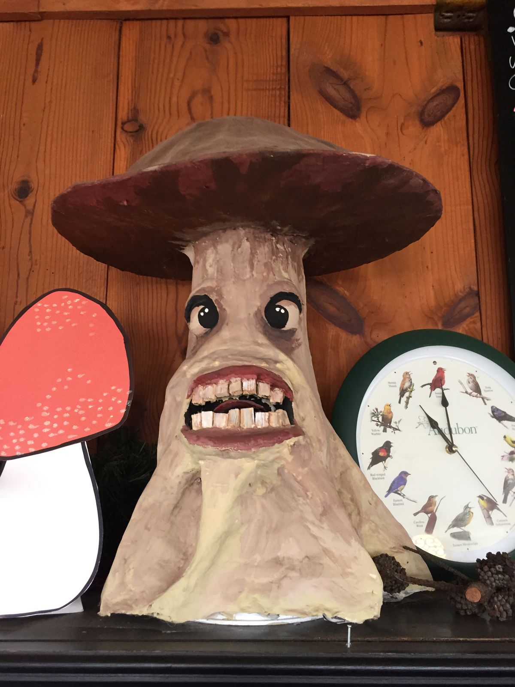
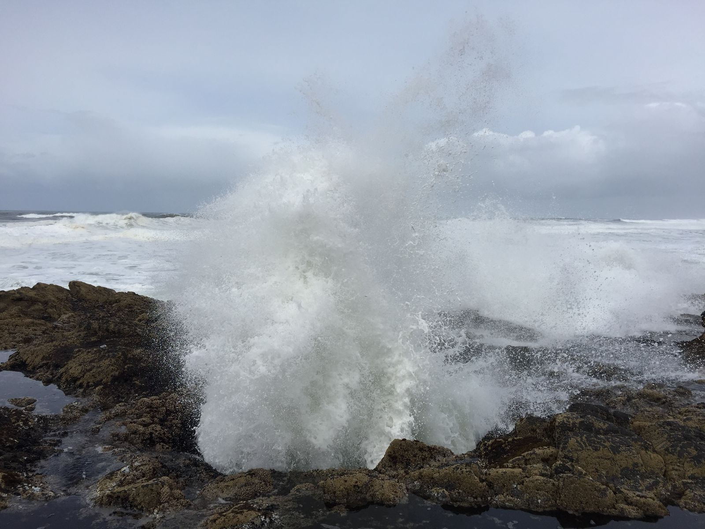
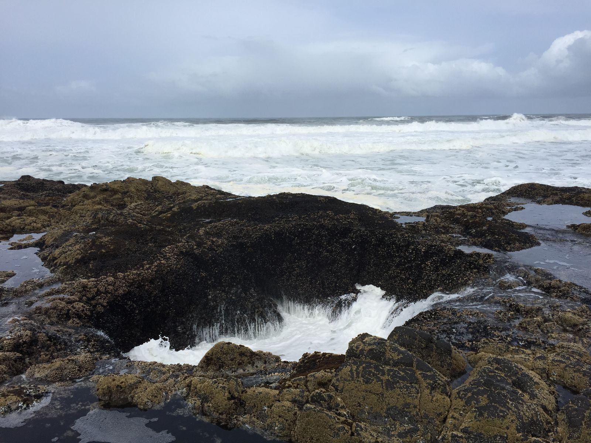
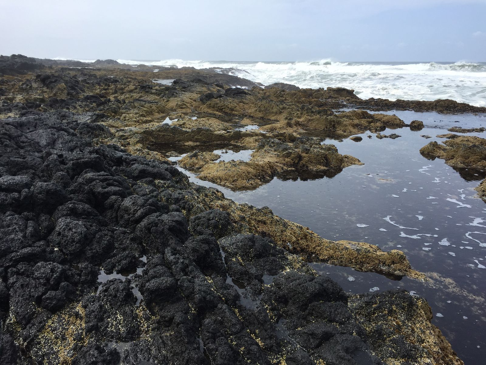
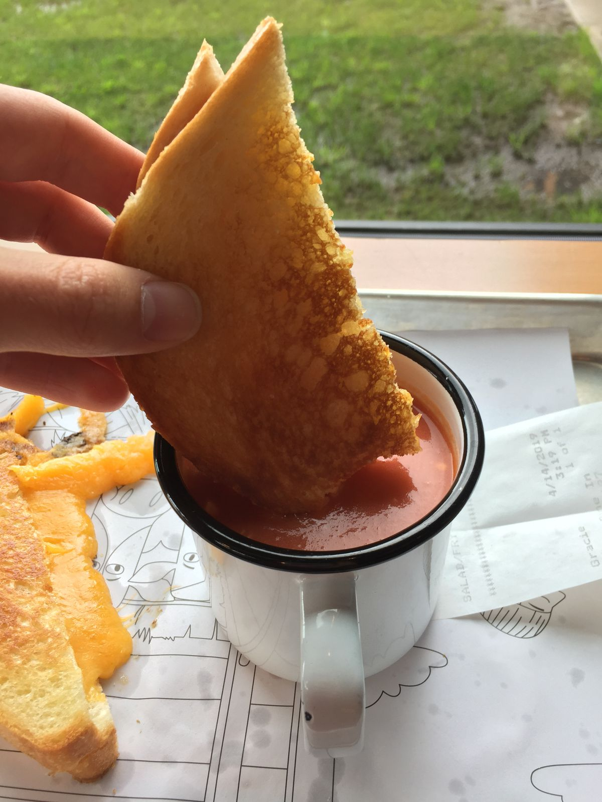

The Oregon Coast
I started my day in Yachats, and I learned very quickly that Oregon is a far different place from California, even Northern California.
As I checked out of my hotel in the morning, the receptionist mentioned that it was a sunny morning. It was not. There was 100% cloud cover, but it was bright and there was no rain. I'm a far way from SoCal.
For breakfast I went to The Green Salmon, a supremely organic café in the town. I got a breakfast sandwich and Yachatian Fog, their take on a London Fog, which was just what I needed.
For any coffee or tea drink, they had an option to add CBD oil, and there were even several drinks designed with CBD oil. They even had a coffee whole beans with CBD oil infusion for sale for home use. Since there was a snail on the packaging, I had to buy it.

More, they have a hot cocoa with a 14-mushroom mix ingredients. One of their lattes centers around reishi mushrooms. They sold dry mushroom snacks as a to go treat, too.


From there, I returned to the Cape Perpetua area too explore the beach when it wasn't raining. I made it down to Thor's Well. It's basically a hole in rock surface on the beach that gets filled with water from the tide and occasionally gushes from a strong wave.

I walked around for a while before heading north to Tillamook, where I visited the Tillamook Creamery and Cheese Factory. It very much a tourist attraction on the coast. The place was packed. The cheese was good but not great. It's a just-above-generic brand of cheese, so my expectations weren't that high. It wasn't bad at all—it's just not a premium dairy brand is all.
It was cool to tour the factory and see how their cheeses are made. Lots of technology goes into it. And it seems that most of the milk is supplied by local family farms. Along the way they described the cows. The cows are certainly treated better than those in CAFOs (confined animal feeding operations, more commonly known as factory farms), and the displays emphasized their happiness and health.
It described the wonderful diet that they feed their baby cows and how they get their own private pen. It didn't note that these cows are taken away from their mothers shortly after birth. It described the wonderful diet that the adult cows are fed of hay, corn (high in nutritional value), and food scraps (such as potato skins and corn cobs that would otherwise be trash). It didn't note that cows should just eat grass, but grass is more expensive than corn and human food waste. But such is the industry.

Of course, I had to get ice cream there, but I also got a grilled cheese sandwich for lunch first.
Leaving the factory, I stopped by a gas station and was confused by the pump interface. An attendant came up to me and asked me what state I'm from. Apparently in Oregon there are no self-serve pumps. Fine by me.
On the road to Portland that cut from Tillamook on the coast, I saw many trucks pulled over by the side of the road, about one every few miles. The drivers were standing by themselves by the river, just staring. Maybe they were fishing, but I couldn't tell. It was kind of strange. An unusual Sunday ritual, perhaps. Welcome to the Pacific Northwest.